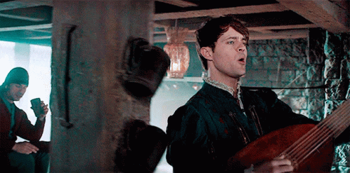

Layout
Personagens
Livros
Dados
Bem vindo Player
Esteja pronto para fazer sua história
Som Ambiente
Candlekeep
Safe in Beregost
Dwarf Mining Town
Market Town
Cobblestone Village
Timber Town
Stormwind
Around the Fire
Amazon Princess
Forgotten Tribe
Each Memory a Message
Neverwonter Nights
Tavern (human)
